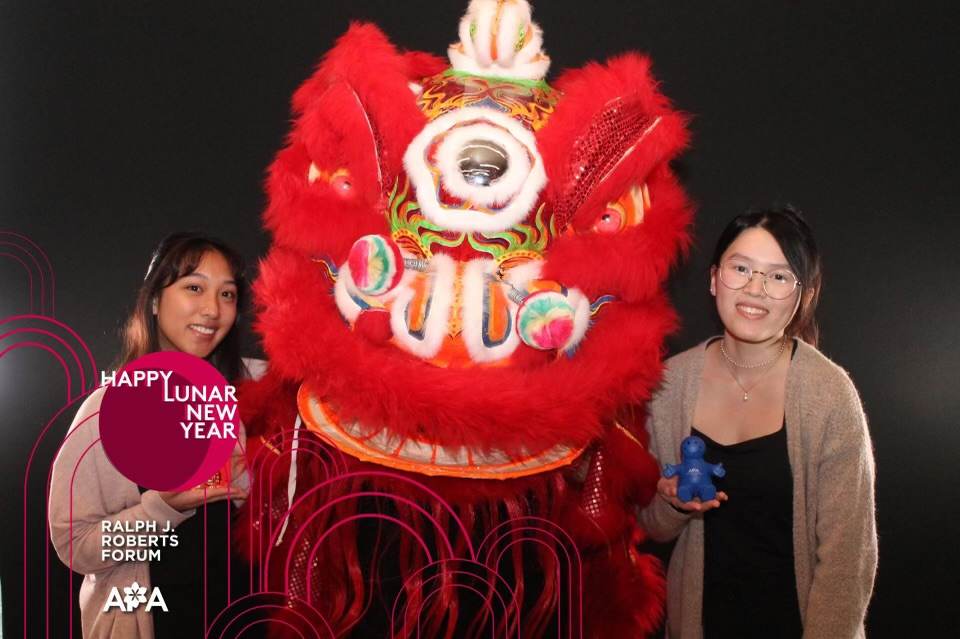

Professional
I am an undergraduate student at Drexel University with a love for creativity, the mind, and human behavior through technology. I am currently a User Experience & Interactive Design (UXID) major with a minor in Psychology.
Drexel University requires students to participate in a 6-month cooperation education oprogram known as "Co-Op". It creates opportunities for students like myself to gain professional work experience in international, research, or entrepreneurship settings. I will be available to work for my next co-op cycle in April of 2024 to August of 2024.
